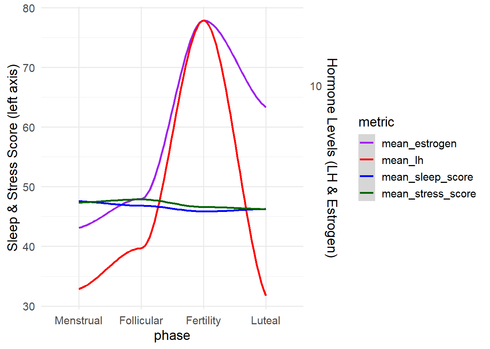

sleep_stress_EDA
Load the data
View the sleep time for different participants in each study interval
# plot the mean timein bed in hour
sleep |>
group_by(id, study_interval)|>
summarize(mean_sleep = mean(timeinbed/60),
sd_sleep = sd(timeinbed),
mean_efficiency = mean(efficiency),
sd_efficiency = sd(efficiency)) |>
ggplot(aes(x = id, y = mean_sleep, color = id))+
geom_point()+
facet_grid(study_interval~.)## `summarise()` has grouped output by 'id'. You can override using the `.groups`
## argument.
The average sleep time for each person is different each study interval and varied across participants. In 2022, some participants slept less than 5 hours and some slept more than 8 hours. In 2024, most participants have better sleep length, 7-8 hours.
Combine the sleep and stress score
# join two data sets, using inner join
sleep_score1 = sleep_score |>
select(id,study_interval, day_in_study, overall_score, deep_sleep_in_minutes)
sleep1 = sleep|>
select(id,study_interval, sleep_start_day_in_study, timeinbed) |>
mutate(day_in_study = sleep_start_day_in_study) |>
select(-sleep_start_day_in_study)
stress_score1 = stress_score |>
filter(calculation_failed == "FALSE")|>
select(id, study_interval, day_in_study, stress_score)|>
distinct(id, study_interval, day_in_study, .keep_all = TRUE)
sleep_stress = inner_join(sleep_score1, stress_score1, join_by("id", "study_interval", "day_in_study"))
# check of na values
sum(is.na(sleep_stress$overall_score))## [1] 0sum(is.na(sleep_stress$stress_score))## [1] 0Showing the sleep score and stress score changes
# graphs to show the score across ids
sleep_stress|>
group_by(id) |>
summarize(
mean_sleep_score = mean(overall_score, na.rm = TRUE),
mean_stress_score = mean(stress_score, na.rm = TRUE),
.groups = "drop"
) |>
ggplot(aes(x = id, mean_sleep_score)) +
geom_smooth(aes(y = mean_sleep_score, color = "mean_sleep_score"), se= FALSE )+
geom_smooth(aes(y = mean_stress_score, color = "mean_stress_score"), se = FALSE) ## `geom_smooth()` using method = 'loess' and formula = 'y ~ x'
## `geom_smooth()` using method = 'loess' and formula = 'y ~ x'
Load and clean the hormone data for menstrual phases
hormone1 = hormone |>
select(id,phase, day_in_study, lh, estrogen,fatigue,moodswing)|>
mutate(
phase = factor(phase, levels = c("Follicular", "Fertility", "Luteal", "Menstrual")),
fatigue = factor(fatigue,
levels = c("Low", "Moderate", "High", "Very High")),
moodswing = factor(moodswing,
levels = c("Very Low/Little", "Low", "Moderate", "High","Very High","Not at all"))
)
phase_order <- c("Menstrual", "Follicular", "Fertility", "Luteal")Joined data with the phase in hormone dataset
sleep_stress_hormone =
inner_join(sleep_stress,hormone1, join_by(id, day_in_study))Now explore the changes of the stress score with the menstrual cycle. The participants slept best during the menstrual time, probably a good sign to rest well during this time. The lowest sleep score were recorded during ovulation/ fertility time in which the increased estrogen and lh levels may contribute to this low sleep quality. The higher stress score the less stressful people experience. In this study, the participants showed the least stressful during folicular period , as the bodies are full of energy. The most stressful time is during luteal period.
plot_1 =
sleep_stress_hormone |>
group_by(phase) |>
summarize(
mean_sleep_score = mean(overall_score, na.rm = TRUE),
mean_stress_score = mean(stress_score, na.rm = TRUE),
.groups = "drop"
) |>
pivot_longer(
cols = starts_with("mean_"),
names_to = "metric",
values_to = "value"
) |>
mutate(
metric = recode(metric,
mean_sleep_score = "Sleep Score",
mean_stress_score = "Stress Score"),
phase = factor(phase, levels = phase_order)
) |>
ggplot(aes(x = phase, y = value, color = metric, group = metric)) +
geom_smooth(linewidth= 1) +
geom_point(size = 3) +
labs(color = "Metric", y = "Mean Score", x = "Phase") +
labs(
x = "Menstrual Cycle Phase",
y = "Score"
) +
theme_minimal() +
theme(legend.position = "bottom",
axis.text.x = element_text(angle = 45, hjust = 1))
plot_2 =
sleep_stress_hormone |>
group_by(phase) |>
summarize(
mean_lh = mean(lh, na.rm = TRUE),
mean_estrogen = mean( estrogen, na.rm = TRUE),
.groups = "drop"
) |>
pivot_longer(
cols = starts_with("mean_"),
names_to = "metric",
values_to = "value"
) |>
mutate(
metric = recode(metric,
mean_lh = "LH",
mean_estrogen = "Estrogen"),
phase = factor(phase, levels = phase_order)
) |>
ggplot(aes(x = phase, y = value, color = metric, group = metric)) +
geom_smooth(linewidth= 1) +
geom_point(size = 3) +
labs(color = "Metric", y = "level", x = "Phase") +
labs(
x = "Menstrual Cycle Phase",
y = "Level"
) +
theme_minimal() +
theme(legend.position = "bottom",
axis.text.x = element_text(angle = 45, hjust = 1))
plot_1+ plot_2## `geom_smooth()` using method = 'loess' and formula = 'y ~ x'## Warning in simpleLoess(y, x, w, span, degree = degree, parametric = parametric,
## : span too small. fewer data values than degrees of freedom.## Warning in simpleLoess(y, x, w, span, degree = degree, parametric = parametric,
## : pseudoinverse used at 0.985## Warning in simpleLoess(y, x, w, span, degree = degree, parametric = parametric,
## : neighborhood radius 2.015## Warning in simpleLoess(y, x, w, span, degree = degree, parametric = parametric,
## : reciprocal condition number 0## Warning in simpleLoess(y, x, w, span, degree = degree, parametric = parametric,
## : There are other near singularities as well. 4.0602## Warning in predLoess(object$y, object$x, newx = if (is.null(newdata)) object$x
## else if (is.data.frame(newdata))
## as.matrix(model.frame(delete.response(terms(object)), : span too small. fewer
## data values than degrees of freedom.## Warning in predLoess(object$y, object$x, newx = if (is.null(newdata)) object$x
## else if (is.data.frame(newdata))
## as.matrix(model.frame(delete.response(terms(object)), : pseudoinverse used at
## 0.985## Warning in predLoess(object$y, object$x, newx = if (is.null(newdata)) object$x
## else if (is.data.frame(newdata))
## as.matrix(model.frame(delete.response(terms(object)), : neighborhood radius
## 2.015## Warning in predLoess(object$y, object$x, newx = if (is.null(newdata)) object$x
## else if (is.data.frame(newdata))
## as.matrix(model.frame(delete.response(terms(object)), : reciprocal condition
## number 0## Warning in predLoess(object$y, object$x, newx = if (is.null(newdata)) object$x
## else if (is.data.frame(newdata))
## as.matrix(model.frame(delete.response(terms(object)), : There are other near
## singularities as well. 4.0602## Warning in simpleLoess(y, x, w, span, degree = degree, parametric = parametric,
## : span too small. fewer data values than degrees of freedom.## Warning in simpleLoess(y, x, w, span, degree = degree, parametric = parametric,
## : pseudoinverse used at 0.985## Warning in simpleLoess(y, x, w, span, degree = degree, parametric = parametric,
## : neighborhood radius 2.015## Warning in simpleLoess(y, x, w, span, degree = degree, parametric = parametric,
## : reciprocal condition number 0## Warning in simpleLoess(y, x, w, span, degree = degree, parametric = parametric,
## : There are other near singularities as well. 4.0602## Warning in predLoess(object$y, object$x, newx = if (is.null(newdata)) object$x
## else if (is.data.frame(newdata))
## as.matrix(model.frame(delete.response(terms(object)), : span too small. fewer
## data values than degrees of freedom.## Warning in predLoess(object$y, object$x, newx = if (is.null(newdata)) object$x
## else if (is.data.frame(newdata))
## as.matrix(model.frame(delete.response(terms(object)), : pseudoinverse used at
## 0.985## Warning in predLoess(object$y, object$x, newx = if (is.null(newdata)) object$x
## else if (is.data.frame(newdata))
## as.matrix(model.frame(delete.response(terms(object)), : neighborhood radius
## 2.015## Warning in predLoess(object$y, object$x, newx = if (is.null(newdata)) object$x
## else if (is.data.frame(newdata))
## as.matrix(model.frame(delete.response(terms(object)), : reciprocal condition
## number 0## Warning in predLoess(object$y, object$x, newx = if (is.null(newdata)) object$x
## else if (is.data.frame(newdata))
## as.matrix(model.frame(delete.response(terms(object)), : There are other near
## singularities as well. 4.0602## Warning in max(ids, na.rm = TRUE): no non-missing arguments to max; returning
## -Inf
## Warning in max(ids, na.rm = TRUE): no non-missing arguments to max; returning
## -Inf## `geom_smooth()` using method = 'loess' and formula = 'y ~ x'## Warning in simpleLoess(y, x, w, span, degree = degree, parametric = parametric,
## : span too small. fewer data values than degrees of freedom.## Warning in simpleLoess(y, x, w, span, degree = degree, parametric = parametric,
## : pseudoinverse used at 0.985## Warning in simpleLoess(y, x, w, span, degree = degree, parametric = parametric,
## : neighborhood radius 2.015## Warning in simpleLoess(y, x, w, span, degree = degree, parametric = parametric,
## : reciprocal condition number 0## Warning in simpleLoess(y, x, w, span, degree = degree, parametric = parametric,
## : There are other near singularities as well. 4.0602## Warning in predLoess(object$y, object$x, newx = if (is.null(newdata)) object$x
## else if (is.data.frame(newdata))
## as.matrix(model.frame(delete.response(terms(object)), : span too small. fewer
## data values than degrees of freedom.## Warning in predLoess(object$y, object$x, newx = if (is.null(newdata)) object$x
## else if (is.data.frame(newdata))
## as.matrix(model.frame(delete.response(terms(object)), : pseudoinverse used at
## 0.985## Warning in predLoess(object$y, object$x, newx = if (is.null(newdata)) object$x
## else if (is.data.frame(newdata))
## as.matrix(model.frame(delete.response(terms(object)), : neighborhood radius
## 2.015## Warning in predLoess(object$y, object$x, newx = if (is.null(newdata)) object$x
## else if (is.data.frame(newdata))
## as.matrix(model.frame(delete.response(terms(object)), : reciprocal condition
## number 0## Warning in predLoess(object$y, object$x, newx = if (is.null(newdata)) object$x
## else if (is.data.frame(newdata))
## as.matrix(model.frame(delete.response(terms(object)), : There are other near
## singularities as well. 4.0602## Warning in simpleLoess(y, x, w, span, degree = degree, parametric = parametric,
## : span too small. fewer data values than degrees of freedom.## Warning in simpleLoess(y, x, w, span, degree = degree, parametric = parametric,
## : pseudoinverse used at 0.985## Warning in simpleLoess(y, x, w, span, degree = degree, parametric = parametric,
## : neighborhood radius 2.015## Warning in simpleLoess(y, x, w, span, degree = degree, parametric = parametric,
## : reciprocal condition number 0## Warning in simpleLoess(y, x, w, span, degree = degree, parametric = parametric,
## : There are other near singularities as well. 4.0602## Warning in predLoess(object$y, object$x, newx = if (is.null(newdata)) object$x
## else if (is.data.frame(newdata))
## as.matrix(model.frame(delete.response(terms(object)), : span too small. fewer
## data values than degrees of freedom.## Warning in predLoess(object$y, object$x, newx = if (is.null(newdata)) object$x
## else if (is.data.frame(newdata))
## as.matrix(model.frame(delete.response(terms(object)), : pseudoinverse used at
## 0.985## Warning in predLoess(object$y, object$x, newx = if (is.null(newdata)) object$x
## else if (is.data.frame(newdata))
## as.matrix(model.frame(delete.response(terms(object)), : neighborhood radius
## 2.015## Warning in predLoess(object$y, object$x, newx = if (is.null(newdata)) object$x
## else if (is.data.frame(newdata))
## as.matrix(model.frame(delete.response(terms(object)), : reciprocal condition
## number 0## Warning in predLoess(object$y, object$x, newx = if (is.null(newdata)) object$x
## else if (is.data.frame(newdata))
## as.matrix(model.frame(delete.response(terms(object)), : There are other near
## singularities as well. 4.0602## Warning in max(ids, na.rm = TRUE): no non-missing arguments to max; returning
## -Inf
## Warning in max(ids, na.rm = TRUE): no non-missing arguments to max; returning
## -Inf
Variation of sleep score across menstrual cycle phases
sleep_stress_hormone |>
ggplot(aes(x = phase, y = overall_score, fill = phase))+
geom_violin(alpha = 0.5)+
geom_boxplot(width = 0.2)+
labs(
title = "Sleep Score Across Menstrual Cycle Phases",
x = "Menstrual Cycle Phase",
y = "score"
) +
theme_minimal() +
theme(axis.text.x = element_text(angle = 45, hjust = 1))
Variation of stress score across menstrual cycle phases
sleep_stress_hormone |>
ggplot(aes(x = phase, y = stress_score, fill = phase))+
geom_violin(alpha = 0.5)+
geom_boxplot(width = 0.2)+
labs(
title = "Stress Score Across Menstrual Cycle Phases",
x = "Menstrual Cycle Phase",
y = "score"
) +
theme_minimal() +
theme(axis.text.x = element_text(angle = 45, hjust = 1))
Explore the variation among different participants. adding the id, ethnicity and birthyear of the subjects.
sleep_stress_hormone2 = subject |>
select(id, birth_year, ethnicity) |>
mutate(age = 2025- birth_year) |>
full_join(sleep_stress_hormone, join_by(id)) View the stress and sleep score across menstrual cycle phases for each
sleep_stress_hormone2 |>
group_by(phase, study_interval, ethnicity) |>
summarize(
mean_sleep_score = mean(overall_score, na.rm = TRUE),
mean_stress_score = mean(stress_score, na.rm = TRUE),
.groups = "drop"
) |>
pivot_longer(
cols = starts_with("mean_"),
names_to = "metric",
values_to = "value"
) |>
drop_na()|>
mutate(
metric = recode(metric,
mean_sleep_score = "Sleep Score",
mean_stress_score = "Stress Score"),
phase = factor(phase, levels = phase_order)
) |>
ggplot(aes(x = phase, y = value, color = ethnicity, group = ethnicity)) +
geom_line(size = 1) +
geom_point(size = 3) +
facet_grid(study_interval ~ metric) +
labs(color = "Ethnicity", y = "Mean Score", x = "Phase") +
labs(
title = "stress and sleep score Across Menstrual Cycle Phases",
x = "Menstrual Cycle Phase",
y = "score"
) +
theme_minimal() +
theme(axis.text.x = element_text(angle = 45, hjust = 1))## Warning: Using `size` aesthetic for lines was deprecated in ggplot2 3.4.0.
## ℹ Please use `linewidth` instead.
## This warning is displayed once every 8 hours.
## Call `lifecycle::last_lifecycle_warnings()` to see where this warning was
## generated. variation of sleep score and stress score across different ethnicity
variation of sleep score and stress score across different ethnicity
sleep_stress_hormone2 |>
select(id, ethnicity, stress_score, overall_score) |>
drop_na()|>
pivot_longer(
cols = c(stress_score, overall_score),
names_to = "metric",
values_to = "value"
) |>
mutate(
metric = recode(metric,
overall_score = "Sleep Score",
stress_score = "Stress Score"
)
) |>
ggplot(aes(x = ethnicity, y = value, fill = metric)) +
geom_boxplot(position = position_dodge(width = 0.8)) +
labs(y = "Score", fill = "Metric")
library(lme4)## Loading required package: Matrix##
## Attaching package: 'Matrix'## The following objects are masked from 'package:tidyr':
##
## expand, pack, unpack##
## Attaching package: 'lme4'## The following object is masked from 'package:nlme':
##
## lmList# model
m1 <- lmer(stress_score ~ phase + study_interval + (1 | id), data = sleep_stress_hormone2)
summary(m1)## Linear mixed model fit by REML ['lmerMod']
## Formula: stress_score ~ phase + study_interval + (1 | id)
## Data: sleep_stress_hormone2
##
## REML criterion at convergence: 25467.2
##
## Scaled residuals:
## Min 1Q Median 3Q Max
## -12.2890 -0.5480 0.0429 0.6122 2.7105
##
## Random effects:
## Groups Name Variance Std.Dev.
## id (Intercept) 13.29 3.646
## Residual 42.21 6.497
## Number of obs: 3852, groups: id, 36
##
## Fixed effects:
## Estimate Std. Error t value
## (Intercept) 958.58490 265.99425 3.604
## phaseFertility -0.86808 0.30820 -2.817
## phaseLuteal -0.92857 0.28599 -3.247
## phaseMenstrual -0.04541 0.32905 -0.138
## study_interval -0.43592 0.13150 -3.315
##
## Correlation of Fixed Effects:
## (Intr) phsFrt phsLtl phsMns
## phaseFrtlty 0.023
## phaseLuteal 0.007 0.540
## phaseMnstrl 0.010 0.478 0.516
## study_ntrvl -1.000 -0.024 -0.008 -0.011sleep_stress_hormone_add =
sleep_score1 |>
inner_join(hormone1, by = join_by(id, day_in_study)) |>
inner_join(sleep1, by = join_by(id, study_interval, day_in_study)) |>
inner_join(stress_score1, by = join_by(id, study_interval, day_in_study))## Warning in inner_join(inner_join(sleep_score1, hormone1, by = join_by(id, : Detected an unexpected many-to-many relationship between `x` and `y`.
## ℹ Row 8 of `x` matches multiple rows in `y`.
## ℹ Row 30 of `y` matches multiple rows in `x`.
## ℹ If a many-to-many relationship is expected, set `relationship =
## "many-to-many"` to silence this warning.# create a table
sleep_stress_hormone_add |>
group_by(phase, id) |>
summarize(
timeinbed = mean(timeinbed/60)
)|>
pivot_wider(names_from = phase,
values_from = timeinbed) |>
knitr::kable(title = "average time in bed", digits = 1)## `summarise()` has grouped output by 'phase'. You can override using the
## `.groups` argument.| id | Follicular | Fertility | Luteal | Menstrual |
|---|---|---|---|---|
| 2 | 8.0 | 8.4 | 6.8 | 5.3 |
| 3 | 5.3 | 4.7 | 4.7 | 5.6 |
| 6 | 7.3 | 6.8 | 6.5 | 6.9 |
| 7 | 7.5 | 7.1 | 7.7 | 7.7 |
| 8 | 6.8 | 7.7 | 6.0 | 7.0 |
| 9 | 7.4 | 7.7 | 6.9 | 6.7 |
| 10 | 7.5 | 7.3 | 6.8 | 7.8 |
| 12 | 7.1 | 7.3 | 6.8 | 7.4 |
| 13 | 6.9 | 6.5 | 7.5 | 7.2 |
| 14 | 7.6 | 7.5 | 7.2 | 7.8 |
| 15 | 5.2 | 5.9 | 6.4 | 6.5 |
| 16 | 7.3 | 6.5 | 7.2 | 7.3 |
| 18 | 6.5 | 7.0 | 6.8 | 7.1 |
| 20 | 7.7 | 7.4 | 7.2 | 6.9 |
| 22 | 6.3 | 7.3 | 7.3 | 7.6 |
| 24 | 4.9 | 5.0 | 4.4 | 4.7 |
| 26 | 6.7 | 6.4 | 6.1 | 6.7 |
| 27 | 5.6 | 5.7 | 6.6 | 6.7 |
| 29 | 6.2 | 5.6 | 5.2 | 8.4 |
| 30 | 6.8 | 6.6 | 7.1 | 6.8 |
| 32 | 7.4 | 7.2 | 6.6 | 7.7 |
| 33 | 7.0 | 7.2 | 7.0 | 7.0 |
| 34 | 7.8 | 7.1 | 7.0 | 6.9 |
| 37 | 6.2 | 6.1 | 7.7 | 4.8 |
| 38 | 7.3 | 7.2 | 7.1 | 7.1 |
| 39 | 6.8 | 5.3 | 5.8 | 5.9 |
| 40 | 7.8 | 6.9 | 6.6 | 7.6 |
| 41 | 7.6 | 6.8 | 7.7 | 7.5 |
| 42 | 6.6 | 6.4 | 7.1 | 7.0 |
| 43 | 6.2 | 7.0 | 7.3 | 7.4 |
| 44 | 7.5 | 7.4 | 6.8 | 7.3 |
| 46 | 6.7 | 5.8 | 5.6 | 6.0 |
| 47 | 7.2 | 6.9 | 7.5 | 7.4 |
| 48 | 6.7 | 6.5 | 7.2 | 7.0 |
| 50 | 7.0 | 7.1 | 6.9 | 7.0 |
| 1 | NA | 7.9 | 3.2 | NA |
sleep_stress_hormone_add |>
group_by(phase, id) |>
summarize(
timeinbed = mean(timeinbed/60)
)|>
ggplot(aes(x = phase, y = timeinbed, fill = phase)) +
geom_violin(alpha = 0.5) +
geom_boxplot(width = 0.2) +
labs(
title = "Sleep time Across Menstrual Cycle Phases",
x = "Menstrual Cycle Phase",
y = "Time in bed (hrs)"
) +
theme_minimal() +
theme(axis.text.x = element_text(angle = 45, hjust = 1))## `summarise()` has grouped output by 'phase'. You can override using the
## `.groups` argument.
See the correlation in sleep score file
sleep_score |>
group_by(id)|>
summarise(mean_deep_sleep = mean(deep_sleep_in_minutes),
mean_overall_score = mean(overall_score))|>
ggplot(aes(x= mean_overall_score, y = mean_deep_sleep )) +
geom_point()## Warning: Removed 2 rows containing missing values or values outside the scale range
## (`geom_point()`).
NOT WORKING_try to put all in one scale
See time in bed and deep sleep vs menstrual cycle
sleep_stress_hormone_add |>
group_by(phase)|>
summarize(timeinbed = mean(timeinbed/60, na.rm = TRUE),
deep_sleep_in_minutes = mean(deep_sleep_in_minutes/60, na.rm = TRUE)
)|>
ggplot(aes(x= phase)) +
geom_line(aes( y = deep_sleep_in_minutes, group = 1),color = "blue", linewidth = 0.8) +
geom_line(aes(y = timeinbed, group = 1), color = "red", linewidth = 0.8)